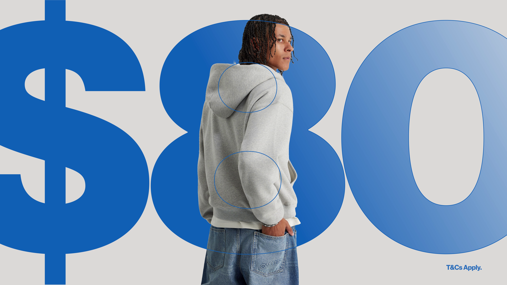

Hey! I'm Neo.
Selected work
Brand Identity · 2024
Project One

Sale Promotion · 2026
Authentics - 2 for $80
Social Motion · 2023
Project Three
Explainer · 2023
Project Four
Brand Identity · 2023
Project Five
Loop · 2022
Project Six